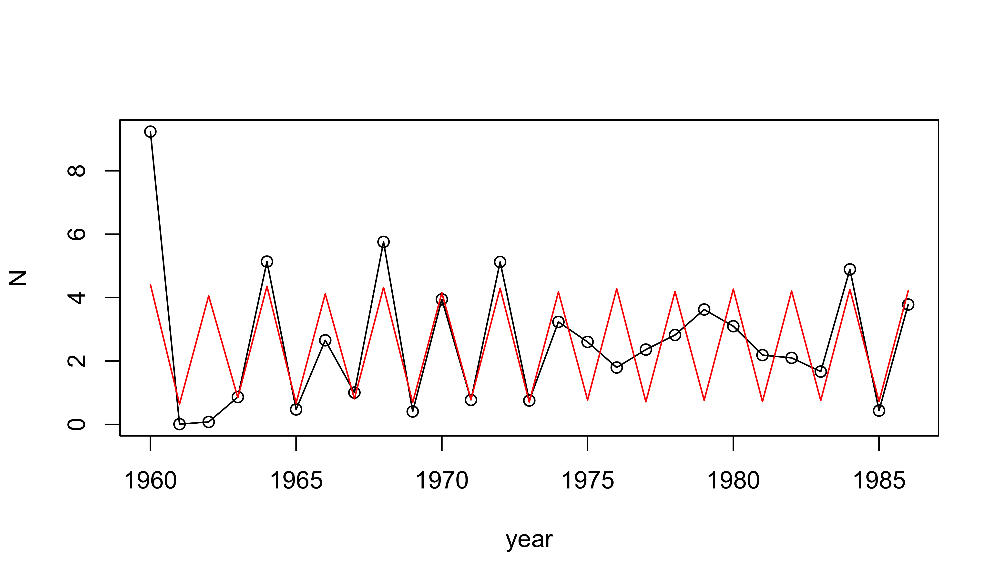

dat <- read.csv("parus.csv")
head(dat) year pop
1960 148
1961 258
1962 185
1963 170
1964 267
1965 239plot(pop~year,data=dat,type='o')Implementing a POMP model from scratch
The R codes for this document are provided as a script.
This document has its origins in the Getting Started vignette.
The R package pomp provides facilities for modeling POMPs, a toolbox of statistical inference methods for analyzing data using POMPs, and a development platform for implmenting new POMP inference methods. The basic data-structure provided by pomp is the object of class pomp, alternatively known as a pomp object. It is a container that holds real or simulated data and a POMP model, possibly together with other information such as model parameters, that may be needed to do things with the model and data. A real pomp data analysis begins with constructing one or more pomp objects to hold the data and the model or models under consideration. Here, we’ll illustrate this process a dataset of Parus major abundance in Wytham Wood, near Oxford [@McCleery1991].
Download and plot the data:
dat <- read.csv("parus.csv")
head(dat) year pop
1960 148
1961 258
1962 185
1963 170
1964 267
1965 239plot(pop~year,data=dat,type='o')Let’s suppose we wish to investigate the extent to which the Ricker model [@Ricker1954] explains these data. First, let’s recall the details of the @Ricker1954 model.
The Ricker map describes the deterministic dynamics of a simple population: \[N_{t+1} = r\,N_{t}\,\exp(-c\,N_{t}).\] Here, \(N_t\) is the population density at time \(t\) and \(r\) is a fixed value, related to the population’s intrinsic capacity to increase. \(N\) is a state variable, \(r\) and \(c\) are parameters. If we know \(r\) and the initial condition \(N_0\), the deterministic Ricker equation predicts the future population density at all times \(t=1,2,\dots\). We can view the initial condition, \(N_0\) as a special kind of parameter, an initial-value parameter.
We can model process noise in this system by making the growth rate \(r\) into a random variable. For example, if we assume that the intrinsic growth rate is log-normally distributed, \(N\) becomes a stochastic process governed by \[N_{t+1} = r\,N_{t}\,\exp(-c\,N_{t}+\varepsilon_{t}), \qquad \varepsilon_{t}\;\sim\;\mathrm{Normal}\left(0,\sigma\right),\] where the new parameter \(\sigma\) is the standard deviation of the noise process \(\varepsilon\).
Let’s suppose that the Ricker model is our model for the dynamics of a real population. However, we cannot know the exact population density at any time, but only estimate it through sampling.
Let’s model measurement error by assuming the measurements, \(y_t\), are Poisson with mean \(\phi\,N_t\): \[y_{t}\;\sim\;\mathrm{Poisson}\left(\phi\,N_{t}\right)\]
In this equation,
The call to construct a pomp object is, naturally enough, pomp. Documentation on this function can be had by doing ?pomp. Learn about the various things you can do once you have a pomp object by doing methods?pomp and following the links therein. Read an overview of the package as a whole with links to its main features by doing package?pomp. A complete index of the functions in pomp is returned by the command library(help=pomp). Finally, the home page for the pomp project is https://kingaa.github.io/pomp/; there you have access to the complete source code, tutorials, manuals, a news blog, a facility for reporting issues and making help requests, etc.
Now, to construct our pomp object:
library(pomp)
parus <- pomp(dat,times="year",t0=1959)The times argument specifies that the column of dat labelled “year” gives the measurement times; t0 is the “zero-time”, the time at which the state process will be initialized. We’ve set it to one year prior to the beginning of the data. Plot the new pomp object:
plot(parus)
We can add the stochastic Ricker model to parus by writing a Csnippet that simulates one realization of the stochastic process, from an arbitary time \(t\) to \(t+1\), given arbitrary states and parameters. We provide this to pomp in the form of a Csnippet, a little snippet of C code that performs the computation. The following does this.
stochStep <- Csnippet("
e = rnorm(0,sigma);
N = r*N*exp(-c*N+e);
")
pomp(parus,rprocess=discrete_time(step.fun=stochStep,delta.t=1),
paramnames=c("r","c","sigma"),statenames=c("N","e")) -> parusNote that in the above, we use the exp and rnorm functions from the R API. In general any C function provided by R is available to you. pomp also provides a number of C functions that are documented in the header file, pomp.h, that is installed with the package. See the Csnippet documentation (?Csnippet) to read more about how to write them. Note too that we use discrete.time.sim here because the model is a stochastic map. We specify that the time step of the discrete-time process is delta.t, here, 1 yr.
At this point, we have what we need to simulate the state process:
sim <- simulate(parus,params=c(N_0=1,e_0=0,r=12,c=1,sigma=0.5),
format="data.frame")
plot(N~year,data=sim,type='o')We complete the specification of the POMP by specifying the measurement model. To obtain the Poisson measurement model described above, we write two Csnippets. The first simulates:
rmeas <- Csnippet("pop = rpois(phi*N);")The second computes the likelihood of observing pop birds given a true density of N:
dmeas <- Csnippet("lik = dpois(pop,phi*N,give_log);")[Note the give_log argument. When this code is evaluated, give_log will be set to 1 if the log likelihood is desired, and 0 else.] We add these into the pomp object:
pomp(parus,rmeasure=rmeas,dmeasure=dmeas,statenames=c("N"),paramnames=c("phi")) -> parusNow we can simulate the whole POMP. First, let’s add some parameters:
coef(parus) <- c(N_0=1,e_0=0,r=20,c=1,sigma=0.1,phi=200)library(ggplot2)
sims <- simulate(parus,nsim=3,format="d",include.data=TRUE)
ggplot(data=sims,mapping=aes(x=year,y=pop))+geom_line()+
facet_wrap(~.id,ncol=1,scales="free_y")We can add the Ricker model deterministic skeleton to the parus pomp object. Since the Ricker model is a discrete-time model, its skeleton is a map that takes \(N_t\) to \(N_{t+1}\) according to the Ricker model equation \[N_{t+1} = r\,N_{t}\,\exp(-c\,N_{t}).\] The following implements this.
skel <- Csnippet("DN = r*N*exp(-c*N);")We then add this to the pomp object:
parus <- pomp(parus,skeleton=map(skel),paramnames=c("r","c"),statenames=c("N"))Note that we have to inform pomp as to which of the variables we’ve referred to in skel is a state variable (statenames) and which is a parameter (paramnames). In writing a Csnippet for the deterministic skeleton, we use D to designate the map’s value. The map call tells pomp that the skeleton is a discrete-time dynamical system (a map) rather than a continuous-time system (a vectorfield).
With just the skeleton defined, we are in a position to compute the trajectories of the deterministic skeleton at any point in parameter space. For example, here we compute the trajectory and superimpose it on a plot of one simulation:
traj <- trajectory(parus,params=c(N_0=1,r=12,c=1),format="data.frame")
plot(N~year,data=sim,type='o')
lines(N~year,data=traj,type='l',col='red')
Let’s see what can be done with a pomp object.
We can plot the data by doing
plot(parus)We can simulate by doing
x <- simulate(parus)What kind of object have we created with this call to simulate?
class(x)[1] "pomp"
attr(,"package")
[1] "pomp"plot(x)Why do we see more time series in the simulated pomp object?
We can turn a pomp object into a data frame:
y <- as.data.frame(parus)
head(y) year pop
1960 148
1961 258
1962 185
1963 170
1964 267
1965 239head(simulate(parus,format="data.frame")) year .id N e pop
1960 1 6.6165502 -0.106158164 1322
1961 1 0.1773515 0.001622059 31
1962 1 3.3475992 0.119484346 670
1963 1 2.0038535 -0.161304450 411
1964 1 4.9782592 -0.081870574 976
1965 1 0.5979535 -0.136795658 96We can also run multiple simulations simultaneously:
x <- simulate(parus,nsim=10)
class(x)[1] "pompList"
attr(,"package")
[1] "pomp"sapply(x,class) [1] "pomp" "pomp" "pomp" "pomp" "pomp" "pomp" "pomp" "pomp"
[9] "pomp" "pomp"x <- simulate(parus,nsim=10,format="data.frame")
head(x) year .id N e pop
1960 1 8.577301 0.15338708 1721
1960 2 6.970921 -0.05398496 1364
1960 3 6.950081 -0.05697897 1357
1960 4 7.630455 0.03641527 1534
1960 5 6.972379 -0.05377579 1378
1960 6 7.759706 0.05321218 1517str(x)'data.frame': 270 obs. of 5 variables:
$ year: num 1960 1960 1960 1960 1960 1960 1960 1960 1960 1960 ...
$ .id : Ord.factor w/ 10 levels "1"<"2"<"3"<"4"<..: 1 2 3 4 5 6 7 8 9 10 ...
$ N : num 8.58 6.97 6.95 7.63 6.97 ...
$ e : num 0.1534 -0.054 -0.057 0.0364 -0.0538 ...
$ pop : num 1721 1364 1357 1534 1378 ...Also,
library(ggplot2)
x <- simulate(parus,nsim=9,format="data.frame",include.data=TRUE)
ggplot(data=x,aes(x=year,y=pop,group=.id,color=(.id=="data")))+
geom_line()+guides(color="none")+
facet_wrap(~.id,ncol=2)We refer to the deterministic map as the “skeleton” of the stochastic process. We can compute a trajectory of the the deterministic skeleton using trajectory:
y <- trajectory(parus,format="data.frame")
plot(N~year,data=y,type="l")
Notice that parus has parameters associated with it:
coef(parus) N_0 e_0 r c sigma phi
1.0 0.0 20.0 1.0 0.1 200.0 These are the parameters at which the simulations and deterministic trajectory computations above were done. We can run these at different parameters:
theta <- coef(parus)
theta[c("r","N_0")] <- c(5,3)
y <- trajectory(parus,params=theta)
plot(N~year,data=as.data.frame(y),type='l')
x <- simulate(parus,params=theta)
plot(x,var="pop")We can also change the parameters stored inside of parus:
coef(parus,c("r","N_0","sigma")) <- c(39,0.5,1)
coef(parus) N_0 e_0 r c sigma phi
0.5 0.0 39.0 1.0 1.0 200.0 plot(simulate(parus),var="pop")If we know the state, \(x(t_0)\), of the system at time \(t_0\), it makes sense to speak about the entire trajectory of the system for all \(t>t_0\). This is true whether we are thinking of the system as deterministic or stochastic. Of course, in the former case, the trajectory is uniquely determined by \(x(t_0)\), while in the stochastic case, only the probability distribution of \(x(t)\), \(t>t_0\) is determined. To avoid confusion, we use the term “trajectory” exclusively to refer to trajectories of a deterministic process. Thus, the trajectory command iterates or integrates the deterministic skeleton forward in time, returning the unique trajectory determined by the specified parameters. When we want to speak about sample paths of a stochastic process, we use the term simulation. Accordingly, the simulate command always returns individual sample paths from the POMP. In particular, we avoid “simulating a set of differential equations”, preferring instead to speak of “integrating” the equations, or “computing trajectories”.
Fiddle with the parameters to try and make the simulations look more like the data. This will help you build some intuition for what the various parameters do.
One can reparameterize the Ricker model according to \[N_{t+1} = N_{t}\,e^{r\,\left(1-\frac{N_{t}}{K}\right)+\varepsilon_t}.\]
Modify the pomp object we created above to reflect this reparameterization.
Modify the measurement model so that \[\mathrm{pop}_t \sim \mathrm{Negbin}\left(\phi\,N_t,k\right),\] i.e., \(\mathrm{pop}_t\) is negative-binomially distributed with mean \(\phi\,N_t\) and clumping parameter \(k\). See ?NegBinomial for documentation on the negative binomial distribution and the R Extensions Manual section on distribution functions for information on how to access these in C.
Construct a pomp object for the Parus major data and the stochastic Beverton-Holt model \[N_{t+1} = \frac{a\,N_t}{1+b\,N_t}\,\varepsilon_t,\] where \(a\) and \(b\) are parameters and \[\varepsilon_t \sim \mathrm{Lognormal}\left(-\tfrac{1}{2}\sigma^2,\sigma\right).\] Assume the same measurement model as before.

Licensed under the Creative Commons Attribution-NonCommercial license. Please share and remix noncommercially, mentioning its origin.